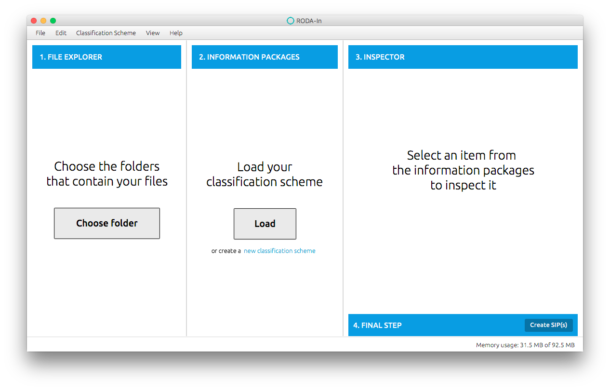

Introduction
RODA-in is a tool specially designed for producers and archivists to create Submission Information Packages (SIP) ready to be submitted to an Open Archival Information System (OAIS). The tool creates SIPs from files and folders available on the local file system.
In this version of the tool we revolutionized the way SIPs are created to satisfy the need for mass processing of data. In this version you can create thousands of valid SIPs with just a few clicks, complete with data and metadata.
The tool includes features such as:
- Create, load and edit classification schemas
- Automatic association of files/folders to SIP
- Automatic association of metadata to SIP
- Definition of metadata templates
- Support for various metadata formats (EAD, DC, etc.)
- Creation of SIP of unlimited size
- Creation of SIP in various formats: BagIt and E-ARK
Supported SIP formats
RODA-in supports several Submission Information Package formats. At the moment we have included support for:
- BagIt, a hierarchical file packaging format for storage and transfer of arbitrary digital content. A "bag" has just enough structure to enclose descriptive "tags" and a "payload" but does not require knowledge of the payload's internal semantics. This BagIt format should be suitable for disk-based or network-based storage and transfer. BagIt is widely used in the practice of digital preservation. The specification of BagIt can be found here.
- E-ARK SIP format, a Submission Information Package format developed by the EU funded E-ARK Project. The specification can be found here
Layout
The applications is composed of 4 distinct panels depicted in light blue in the following figure:
- File explorer - where the user should pick the files/folders that she whishes on pack.
- Information packages - where the user may see and rearrange the pre-prepared packages.
- Inspector - where the user can edit the content of the information package (data and metadata).
- Submission packages - where the user may generate the Submission Information Packages that have been prepared.

How to use
The basic workflow of the application is as follows:
- Choose a working folder in your file system (panel on the left). This will serve as the root of your project.
- Choose a classification scheme (panel on the center). There's two options:
- Load a classification scheme. You can obtain a classification scheme from RODA repository, for example.
- Create a new classification scheme.
- Drag files/folders from the left panel to the center panel into the appropriate node in the classification hierarchical structure on the central pane .
- Choose the type of data and metadata association that best fits your needs. This will have impact on the number and structure of the SIPs created.
- (Optional) Inspect the created SIPs, edit metadata and content.
- Export the SIPs to a folder
To select more than one file/folder you can press SHIFT or CTRL.
The following actions are supported to edit the classification scheme:
- Add node
- Edit the title and the description level of the node
- Move node (using drag and drop)
- Change parent
- Move to the root of the tree
- Remove node
Advanced options
Supporting new metadata schemas
Since it's tedious to edit the template files by hand, we added a way to create forms based on the fields of the templates. These files are located in the "roda-in" folder (My Documents when using Windows and the user's home directory if using Unix), under the "templates" folder. Using the powerful Handlebars engine, anyone can create template files with the necessary information to create the form. In addition to a simple tag, (e.g. {{person}}), we can now add options which will modify the way each field is created. These options are key-value elements, e.g. title="SIP creation using RODA-in", where the key is the name of the option and the value is the value that will be given to that option. Only the first tag should have options, i.e., if there's two tags with the same name, the options of the second are ignored. The options are not required, the form is still created with a simple tag, which creates a simple text field.
The available options that alter the fields created for each tag are:
- value - the predefined value of the field
- order - the order of the field
- type - the type of the field. The possible values are:
- text - text field
- text-area - Text area. Larger than a field text.
- date - text field with a date picker
- list - list with the possible values (combo box)
- list - List with the possible values that a field can have. Usable when
type="list". The format is a JSON array. Example: [option A, option B, "option C"]
- label - The label that appears to the left of the field.
- mandatory - If set to true the label is styled in bold to draw attention.
- hidden - If set to true the field is hidden
- auto-generate - Fills the value with one of the available generators. Overrides the value option:
- now - the current date in the format year/month/day
- id - generates an identifier
- title - generates a title
- level - adds the current description level
- parentid - adds the parent's id, if it exists
- language - adds the system language, based on the locale. Example: "português" or "English"
The following is an example of how the tags can be used:
{{title
order=1
type="text"
label="Template title"
mandatory=true
auto-generate="title"
}}